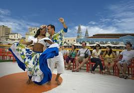

O que é o Carimbó?
Origem: Norte do Brasil, especialmente no estado do Pará.
Influências: Mistura de elementos indígenas, africanos e europeus.
Nome: Deriva do tambor de mesmo nome, feito de tronco oco (carimbó).
Características da Dança
Estilo: Dança de roda, alegre e sensual.
Formação: Tradicionalmente feita em pares, mas pode incluir coreografias em grupo.
Movimentos: Passos marcados, giros, sapateados leves e o movimento de “apanhar o lenço/saia” como gesto de conquista.

Figurino
Mulheres: Saias rodadas, coloridas e floridas, com blusas curtas.
Homens: Camisas estampadas e calças brancas ou bermudas.
Pés descalços: Comum em apresentações tradicionais.
Música
Instrumentos principais: Carimbó (tambor), maracás, banjo, flauta e ganzá.
Ritmo: Forte batida percussiva, geralmente em compasso 2/4 ou 4/4.
Função Cultural
Tradição popular: Ligada a festas, celebrações e identidade cultural amazônica.
Patrimônio cultural: Reconhecido como patrimônio cultural imaterial do Brasil pelo IPHAN (Instituto do Patrimônio Histórico e Artístico Nacional) em 2014.
Explore nosso site para aprender mais sobre essa rica manifestação cultural!